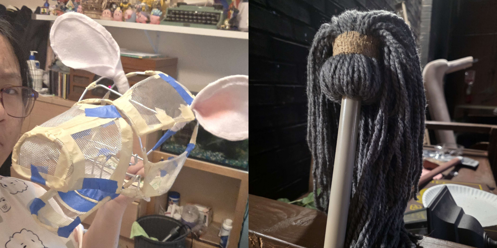
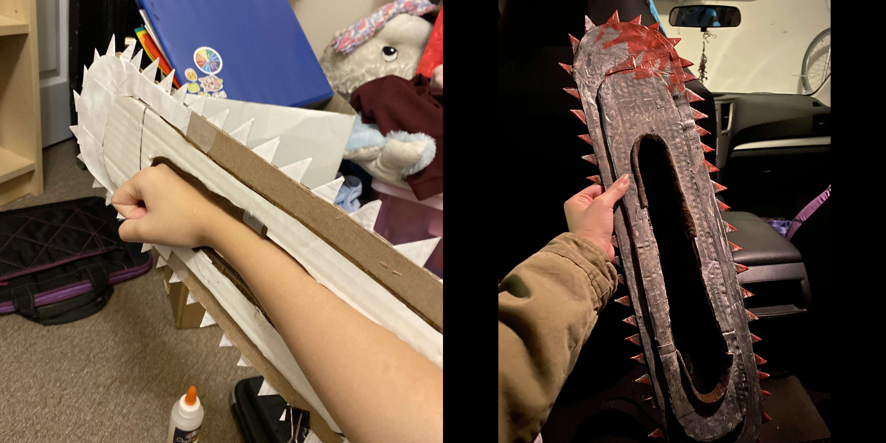

Computer Science and Web Design

Web Starter Project
This was the first project we did in my CS 1050 class during our web design module. Even though I understood basic html, this was the first time I had ever coded and designed a basic website. We used the Bootstrap 5.3 framework to style our pages, and this was basically a way to explore and utilize the components provided.
Alongside this project, I found out how to use Git and Github for version control, how to make Technical Documentation to record important processes, and how to introduce responsive web design for accessibility.
Technical Theatre

During High School, I worked as the Prop Master in the Tech Crew of our Theatre program. This meant I managed, designed, and sometimes even made stage props that would then be used by actors onstage. Occasionally I would also help assemble or paint the set, and this experience really let me explore my creative capabilities.

My final show was Into the Woods, a musical with THREE acts. Here, I made my best, and favorite prop: Milky White. She was a puppet cow that would hang off the hip of an actor. Her most notable features were her blinking eyes, her movable ears, and her expressive mouth. She was made completely by my hand in about 2 months. Other props I’ve made by hand include a mop, an axe (Both for Noises Off!), and several foodstuffs for Alice in Wonderland.
Personal Projects

Before and after paintOne of the first props I ever made was a paper and cardboard chainsaw prop. I made it for a Halloween costume of the character Denji from Chainsaw Man. It was the first time I had ever made something like this and I ended up being really proud of it.